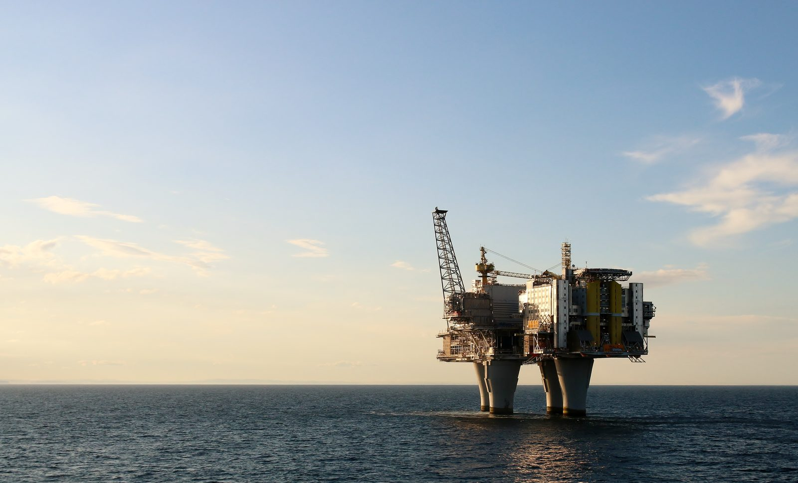

En enero de 1957, un arquitecto danés de 38 años, Jørn Utzon, ganó el concurso para la casa de ópera de Sídney, en Australia, con dibujos que eran poco más que un croquis: conchas blancas, curvas y libres, abiertas sobre el puerto en Bennelong Point. El jurado se quedó con el dibujo. Nadie sabía todavía cómo construirlo.
La obra empezó en 1959 con la cubierta sin resolver. Los ingenieros de Ove Arup & Partners pasaron años intentando convertir aquellas curvas en parábolas y elipses que pudieran calcularse y fabricarse. La respuesta, en 1961, fue sacar todas las conchas de la superficie de una misma esfera. El resto de la historia, con la salida del arquitecto, un presupuesto multiplicado por 14 y una lotería que pagó la cuenta, se extendió hasta 1973.
FICHAFicha de la obra
| Por qué | Dar a Sídney una gran casa de ópera y conciertos. El gobierno de Nueva Gales del Sur, con el primer ministro Joseph Cahill, abrió un concurso internacional y eligió Bennelong Point, la punta de tierra en el puerto donde había un depósito de tranvías.el depósito de tranvías viene de una sola fuente (Dictionary of Sydney) | 2+ fuentes |
|---|---|---|
| El concurso | Lo ganó Jørn Utzon, anunciado el 29/01/1957. El jurado incluía al arquitecto finlandés-estadounidense Eero Saarinen. El número de proyectos recibidos aparece como 220, 223 o 233, de 28 o 32 países.el ganador y la fecha están confirmados; el conteo de participantes varía incluso entre las páginas de la propia Opera House | diverge |
| Proyecto | Jørn Utzon, hasta su renuncia el 28/02/1966. Después, Peter Hall, con Lionel Todd y David Littlemore, bajo el arquitecto del gobierno E. H. Farmer, diseñó los interiores y cambió el programa de las salas.el nombramiento de Hall aparece el 28 de marzo o el 19 de abril de 1966 | 2+ fuentes |
| Ingeniería | Ove Arup & Partners, de Londres, de principio a fin. Jack Zunz asumió el problema de la cubierta en 1961; el joven ingeniero Peter Rice se encargó en Sídney del replanteo de las piezas de las conchas.Arup dice haber sido nombrada en 1957; la New Civil Engineer, en noviembre de 1958 | 2+ fuentes |
| La solución | Tras 12 esquemas, con parábolas y elipsoides, todas las conchas se sacaron de la superficie de una misma esfera, en 1961. La curvatura igual permitió fabricar las nervaduras en serie en la obra. El radio aparece como 75,2 metros en la Wikipedia; Arup habla de 75 metros de diámetro.la Opera House atribuye la idea a Utzon; el relato de Jack Zunz describe una llegada conjunta | 2+ fuentes |
| Quién la construyó | Civil & Civic, el podio (1959–1963); M. R. Hornibrook, las conchas, desde 1963, montadas con un arco de acero móvil calculado a mano por el ingeniero Joe Bertony; después, los interiores. | 2+ fuentes |
| Plazo | Inicio el 02/03/1959; podio listo en febrero de 1963; conchas de 1963 a 1966 o 1967; inauguración el 20/10/1973 por la reina Isabel II. Previsión inicial: 4 años y entrega en 1963. | 2+ fuentes |
| Obreros | Unos 10 mil a lo largo de la obra, según la Sydney Opera House. El pico, la jornada y el salario no aparecen en las fuentes consultadas. En 1972, los obreros ocuparon la obra durante unas cinco semanas y trabajaron bajo su propio control. | 1 fuente |
| Muertes y accidentes | Ninguna fuente institucional consultada publica una cifra de muertos o heridos en la obra. Las versiones que circulan, de ninguna muerte o de una, vienen de sitios sin fuente primaria. | sin registro |
| Costo | Presupuesto de £3,5 millones en 1957, lo mismo que AU$ 7 millones tras el cambio de moneda de 1966. Costo final de AU$ 102 millones, 14,6 veces el presupuesto, o 1.357% por encima de lo previsto, en valores nominales.el total es la suma nominal de 14 años de gastos; sin la serie anual, no hay conversión confiable a valores de hoy | 2+ fuentes |
| Quién pagó | La Opera House Lottery, del gobierno de Nueva Gales del Sur: 496 sorteos y unos 86,7 millones de boletos, que recaudaron AU$ 102 millones hasta 1986, según el Tesoro del estado.el primer sorteo aparece en 1957 o en 1958 | 2+ fuentes |
| Conchas y azulejos | 2.194 piezas prefabricadas de nervadura, de hasta 15 o 15,5 toneladas cada una. 1.056.006 azulejos de 120 mm hechos por la sueca Höganäs, blancos brillantes y crema mate, colocados en 4.228 paneles en forma de chevrón.el número de paneles viene solo de la Opera House | 2+ fuentes |
| La salida de Utzon | Después de la elección de 1965, el ministro de Obras Públicas Davis Hughes retuvo pagos de honorarios. Utzon renunció el 28/02/1966, dejó Australia en abril y nunca volvió para ver la obra terminada. | 2+ fuentes |
| Patrimonio | Inscrita en la Lista del Patrimonio Mundial de la UNESCO el 28/06/2007, por decisión unánime, en el tercer intento. | 2+ fuentes |
| Renovaciones | La Sala de Conciertos estuvo cerrada unos dos años y reabrió en julio de 2022 con nueva acústica, dentro de un programa de renovación de AU$ 275 millones o AU$ 300 millones, según la fuente. | diverge |
| Hoy | El 04/08/2026, el gobierno del estado anunció AU$ 120 millones para mantenimiento y modernización, incluido el refuerzo de la estructura bajo el Northern Boardwalk, la plataforma sobre el agua, después de más de 50 años de ambiente marino. | 2+ fuentes |
01Un croquis sin geometría
En 1956, el gobierno de Nueva Gales del Sur abrió un concurso internacional para una casa de ópera en Bennelong Point, la punta de tierra en el puerto de Sídney, junto al Harbour Bridge. Llegaron más de doscientos proyectos. El ganador, anunciado el 29 de enero de 1957, fue el número 218, del danés Jørn Utzon: un podio de piedra y, encima, conchas blancas abiertas hacia el mar.
Era un dibujo, no un proyecto. Las curvas se habían trazado a mano alzada y no correspondían a ninguna forma que pudiera escribirse en una ecuación. Sin ecuación, no había forma de calcular el esfuerzo en cada punto ni de fabricar las piezas. La leyenda dice que Eero Saarinen, miembro del jurado, rescató el proyecto de Utzon de la pila de los rechazados; otro jurado, Henry Ashworth, negó la historia, y no hay registro preciso de cómo se tomó la decisión.
02Empezar sin techo
El primer ministro Joseph Cahill, según los relatos de la época, quería empezar pronto, para que un gobierno siguiente no pudiera cancelar la obra. La obra empezó el 2 de marzo de 1959, con la constructora Civil & Civic haciendo el podio, mientras la cubierta todavía no tenía solución. Cahill murió siete meses después. El presupuesto del concurso era de £3,5 millones, y la entrega estaba prevista para 1963.
En Londres, los ingenieros de Ove Arup & Partners intentaron dar forma a las conchas. Primero, secciones de parábolas; después, de elipsoides. La propia Arup cuenta 12 esquemas antes de llegar a la solución. La idea inicial de un cascarón delgado de concreto dio paso a nervaduras, y cada nueva geometría chocaba con el mismo problema: las conchas tenían curvaturas diferentes en cada punto, y cada pieza tendría que ser única. El podio, empezado antes de que la cubierta tuviera forma, no estuvo listo hasta febrero de 1963.
03Gajos de una esfera
La salida, en 1961, fue abandonar las formas libres y sacar todas las conchas de la superficie de una misma esfera. En una esfera, la curvatura es igual en todas partes. Así, las nervaduras podían dividirse en segmentos que se repetían, moldeados en serie en la propia obra, y la cubierta entera se volvía un problema de fabricación, no de escultura. La solución se formalizó en el llamado Yellow Book, entregado en enero de 1962, con plantas, cortes y los detalles de las nervaduras y los azulejos.
Quién tuvo la idea es cuestión de versiones. La Sydney Opera House cuenta que Utzon la tuvo solo, una noche, en su estudio de Hellebæk, en Dinamarca, al ver que los modelos de las conchas encajaban unos en otros, y dice que la historia de que pelaba una naranja es un mito. El relato del ingeniero Jack Zunz, que asumió el problema en Arup en agosto de 1961, describe una llegada conjunta: los ingenieros explicaron que solo las formas esféricas o toroidales daban la repetición que la obra necesitaba, y la elección llegó alrededor de un mes después.
Calcular las conchas exigió uno de los primeros usos de la computadora en el análisis estructural. Según la revista Civil Engineering, de la sociedad estadounidense de ingenieros civiles, fueron unas 2.000 horas de computadora hasta marzo de 1967.

04Montar en el aire
La constructora M. R. Hornibrook asumió las conchas en 1963. En total, 2.194 piezas prefabricadas de concreto, de hasta 15 toneladas cada una, se fabricaron en el lugar, se izaron con grúas y se unieron unas a otras con resina epoxi, sujetas con cables de acero pretensado. Para colocarlas, el ingeniero Joe Bertony, nacido en Córcega, diseñó un arco de montaje de acero que se desplazaba sobre el podio. Hizo los cálculos a mano; revisados después en una computadora IBM 7090, en Woomera, no tenían errores.
En Sídney, el ingeniero residente de Arup era Peter Rice, que había trabajado en la geometría de las conchas en Londres y escribió un programa para replantear cada pieza en el espacio. Después venían los azulejos. La empresa sueca Höganäs pasó tres años desarrollando lo que se conoció como Sydney Tile: 120 milímetros, arcilla con un poco de piedra molida, en blanco brillante y crema mate. Son 1.056.006 azulejos, colocados en 4.228 paneles en forma de chevrón, fabricados bajo la escalinata monumental.

05El arquitecto que se fue
En 1965, cambió el gobierno. El nuevo primer ministro, Robert Askin, había criticado el proyecto, y el ministro de Obras Públicas, Davis Hughes, pasó a controlar pagos y decisiones. Con los honorarios retenidos, Utzon renunció el 28 de febrero de 1966. Dejó Australia en abril y nunca volvió para ver el edificio terminado.
El arquitecto Peter Hall, formado en Sídney, asumió los interiores con Lionel Todd y David Littlemore. En diciembre de 1966 decidió que la sala mayor, que Utzon diseñaba para ópera y concierto, sería solo de conciertos, y la ópera pasó a una sala menor; la maquinaria escénica ya instalada se desmontó. En una entrevista de 1973, Hall dijo que el auditorio en que trabajaba Utzon tenía asientos y pasillos fuera de las normas de evacuación. La obra siguió hasta 1973, con un episodio único en 1972, cuando los obreros expulsaron a la gerencia y trabajaron durante unas cinco semanas bajo su propio control.
,_Opera_House_--_2019_--_3054.jpg){kind=link}
06La cuenta de la lotería
El presupuesto de 1957, £3,5 millones, se convirtió en AU$ 7 millones cuando Australia cambió la libra por el dólar, en 1966. El costo final fue de AU$ 102 millones, 14,6 veces el presupuesto, o 1.357% por encima de lo previsto, sumando valores de catorce años sin actualizar. En lugar de cuatro años, fueron catorce, y la entrega se retrasó diez.
Quien pagó fue el juego. Según el Tesoro de Nueva Gales del Sur, la Opera House Lottery hizo 496 sorteos y vendió unos 86,7 millones de boletos, a £5 cada uno, con un premio máximo de £100.000, y recaudó AU$ 102 millones hasta 1986. La reina Isabel II inauguró el edificio el 20 de octubre de 1973. Utzon no fue.
07Cincuenta años de mar
La reconciliación llegó tarde. En 1999, Utzon fue llamado a definir los principios de diseño del edificio; en 2003 recibió el Premio Pritzker; en 2004, una sala rehecha según su diseño recibió su nombre. El 28 de junio de 2007, la Ópera entró en la Lista del Patrimonio Mundial de la UNESCO, por unanimidad, en el tercer intento. Utzon murió en noviembre de 2008. La Sala de Conciertos estuvo cerrada unos dos años y reabrió en julio de 2022 con nueva acústica.
El 4 de agosto de 2026, el gobierno del estado anunció AU$ 120 millones para mantenimiento y modernización. Además de cambiar maquinaria escénica de hasta 50 años, el paquete incluye reforzar la estructura bajo el Northern Boardwalk, la plataforma sobre el agua, después de más de medio siglo de ambiente marino. La obra que solo se mantuvo en pie porque sus piezas se repetían ahora necesita proteger la base sobre la que se apoya.
MITOSLo que circula y lo que dice el registro
- Lo que circula
Utzon peló una naranja y descubrió que las conchas podían salir de una esfera.
Lo que dice el registroLa propia Sydney Opera House dice que la historia de la naranja es un mito. La versión oficial es que Utzon vio, una noche de 1961, que los modelos de las conchas encajaban unos en otros. El relato del ingeniero Jack Zunz, de Arup, describe la llegada a la esfera como un trabajo conjunto entre arquitecto e ingenieros.
- Lo que circula
Las conchas de concreto no se sostenían en pie.
Lo que dice el registroLo que faltaba, antes que nada, era geometría. Las curvas del croquis de 1957 no correspondían a ninguna forma calculable, y por eso no había manera de dimensionarlas ni de fabricarlas. El cascarón delgado imaginado al principio tampoco resistía las cargas de viento, lo que llevó a las nervaduras. Fueron 12 esquemas, con parábolas y elipsoides, antes de la solución esférica.
- Lo que circula
Eero Saarinen rescató el proyecto de Utzon de la pila de los rechazados.
Lo que dice el registroEs la anécdota más repetida del concurso, pero no hay registro preciso de cómo decidió el jurado. El jurado Henry Ashworth negó la historia y dijo que Leslie Martin, otro miembro del jurado, ya se había impresionado con el proyecto antes de que llegara Saarinen.
- Lo que circula
Nadie murió en la construcción de la Ópera de Sídney.
Lo que dice el registroNinguna fuente institucional consultada publica una cifra de muertos en la obra. La frase aparece en sitios sin fuente, igual que la versión opuesta, de una muerte. Lo que existe es ausencia de registro.
PREGUNTASPreguntas frecuentes
¿Cómo se construyó la Ópera de Sídney?
Las conchas del croquis de Utzon no tenían una geometría calculable; tras 12 esquemas, en 1961 todas pasaron a sacarse de la superficie de una misma esfera. Así, 2.194 piezas prefabricadas de concreto se fabricaron en serie en la obra, se izaron y se unieron con resina epoxi y cables de acero pretensado.
¿Cuándo se construyó la Ópera de Sídney?
La obra empezó el 2 de marzo de 1959 y la Ópera la inauguró la reina Isabel II el 20 de octubre de 1973. Fueron 14 años de obra, frente a la previsión de 4 años y entrega en 1963.
¿Quién fue el arquitecto de la Ópera de Sídney?
El danés Jørn Utzon, que ganó el concurso en 1957. Renunció el 28 de febrero de 1966 y nunca volvió para ver la obra terminada; los interiores los diseñó Peter Hall, con Lionel Todd y David Littlemore. La ingeniería fue de Ove Arup & Partners de principio a fin.
¿Cuánto costó la Ópera de Sídney?
El costo final fue de AU$ 102 millones, 14,6 veces el presupuesto de 1957, de £3,5 millones, lo mismo que AU$ 7 millones. Quien pagó fue la Opera House Lottery, del gobierno de Nueva Gales del Sur, que recaudó AU$ 102 millones hasta 1986.
¿Cuántas personas murieron en la construcción de la Ópera de Sídney?
No hay registro. Ninguna fuente institucional consultada publica una cifra de muertos o heridos en la obra, y las versiones que circulan, de ninguna muerte o de una, vienen de sitios sin fuente primaria. Unos 10 mil obreros pasaron por la obra, según la Sydney Opera House.
Episodio en producción
Cada semana, una obra que no debería haber quedado en pie.

Plataforma Troll A
Campo de gas de Troll, mar del Norte, al noroeste de Bergen, Vestland, Noruega · 1991–1996Empezar, meses después de que otra base de la misma constructora se hundiera por un error de cálculo, una torre de concreto de 472 metros, levantarla en un fiordo, hacerla flotar de pie hasta mar abierto y asentarla sobre 303 metros de agua.
Leer la obra →MÁSLee también
FUENTESFuentes
- Sydney Opera House, "The spherical solution" — sydneyoperahouse.com
- Sydney Opera House, "Interesting facts about Sydney Opera House" — sydneyoperahouse.com
- Sydney Opera House, "Jørn Utzon AC" — sydneyoperahouse.com
- NSW Treasury, "The House the Lotteries Built" — nsw.gov.au
- Arup, "Sydney Opera House" — arup.com
- Laila Ellmoos, "Sydney Opera House", Dictionary of Sydney, 2008 — dictionaryofsydney.org
- Civil Engineering (ASCE), "Australia's Sydney Opera House hits all the right notes", septiembre de 2022 — asce.org
- New Civil Engineer, "No.30 Sydney Opera House", 25/10/2012 — newcivilengineer.com
- create (Engineers Australia), "The engineering that turned the Sydney Opera House from an idea into an icon" — createdigital.org.au
- Andrew Botros, "Jack Zunz's Opera House" — linkedin.com
- ArchitectureAU, "Fifty years of Sydney Opera House in 50 facts", 2023 — architectureau.com
- ABC News, "The man who fixed the 'plain illegal' Sydney Opera House", 01/02/2016 — abc.net.au
- ABC News, "Opera House makes World Heritage list", 28/06/2007 — abc.net.au
- ABC News, reapertura de la Sala de Conciertos de la Ópera de Sídney, 14/07/2022 — abc.net.au
- Commons Library, "The 1972 Sydney Opera House Work-In" — commonslibrary.org
- Gobierno de Nueva Gales del Sur, "Securing the future of live performance at the Sydney Opera House", 04/08/2026 — nsw.gov.au
- The Urban Developer, "Sydney Opera House Lines Up $120m Program of Renewal, Upgrades", 2026 — theurbandeveloper.com
- Sydney Opera House, "Sydney Opera House CEO Louise Herron to step down after 14 years", 01/07/2026 — sydneyoperahouse.com
- Wikipedia, "Sydney Opera House" (punto de partida) — en.wikipedia.org
Imágenes
- Fig. 01 — La Ópera en 2015, vista desde el Harbour Bridge, en Bennelong Point: Bernard Gagnon · CC BY-SA 3.0
- Fig. 02 — Las conchas en montaje en 1965, vistas desde lo alto, con las piezas prefabricadas de las nervaduras almacenadas en el podio: Len Stone photograph collection, City of Sydney Archives · CC BY 4.0
- Fig. 03 — Hacia 1965: las conchas suben nervadura por nervadura, con el Harbour Bridge al fondo: Len Stone photograph collection, City of Sydney Archives · CC BY 4.0
- Fig. 04 — En 1968, las conchas están cerradas y los interiores, a cargo del nuevo arquitecto Peter Hall, aún por hacer: Phillip Capper · CC BY 2.0
- Fig. 05 — El transbordador Baragoola en el puerto durante la inauguración, el 20 de octubre de 1973: Graeme Andrews, City of Sydney Archives · CC BY 4.0
- Fig. 06 — Nervaduras, vidrio y azulejos: la punta de una de las conchas en 2019: Dietmar Rabich · CC BY-SA 4.0